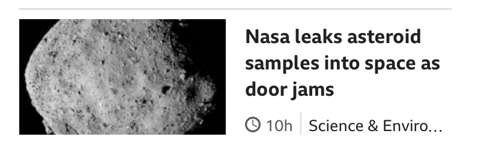
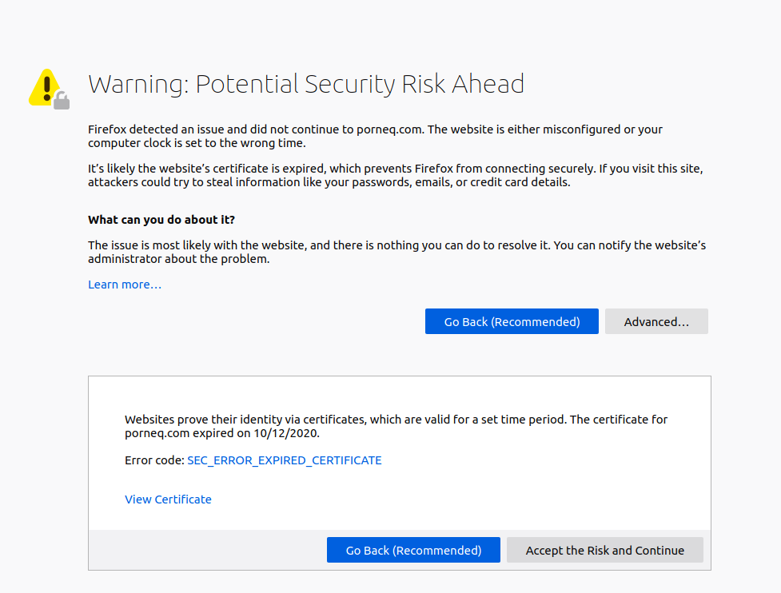

(Oct 30, 2020) Canada aims to bring 401,000 new permanent residents in 2021, 411,000 in 2022 and 421,000 in 2023. ... Dancho said Canadians must have a clear explanation of how immigration targets will meet Canada's labour needs while upholding its humanitarian commitments. (CBC News)
(Oct 30, 2020) JD Logistics plans to roll out 100 autonomous delivery vehicles in Changshu, Jiangsu province, before the end of this year. ... The autonomous delivery vehicles trundling around the Chinese city look like little red minivans or delivery lockers on wheels, armed with an array of sensors and cameras. (Strait Times)
(30 Oct, 2020) Chinese officials are attending a press conference in Beijing this morning to provide more detail on the country’s plans for the future. ... [We will] build the Guangdong-Hong Kong-Macau Greater Bay Area with high quality and improved policies and measures to facilitate the development of Hong Kong and Macau residents in the mainland. ... Han said a complete decoupling between the US and China was “unrealistic” and “does no good to either country and does no good to the world” ... For the first time, China has laid out a clear timeline for building a great socialist culture by 2035 – one of its long-term visionary goals. ... China’s cultural soft power and comprehensive influence would be further enhanced, he said, with three key tasks for the next five years – to improve the level of social civilisation, to enhance the level of public culture, and to improve the cultural system. (SCMP)
(October 29, 2020) The Wisconsin Republican party has said hackers stole $2.3m (£1.7m) from the group's effort to support President Donald Trump's re-election. ... Effectively the hackers have either gained access to or spoofed an email address to put themselves between the Wisconsin Republican party HQ and one of their suppliers. (BBC News)
(October 29, 2020) Amazon, Facebook, Apple and Google reported sales and profits figures on Thursday covering the three months to 30 September - and there was a common thread: growth shows no sign of slowing. ... But the companies' financial success will only make them more of a target for complaints, warned Paolo Pescatore, analyst at PP Foresight. ... "There will be further calls from rivals to regulate tech companies." (BBC News)
(October 29, 2020) With Belarus still rocked by protests against President Alexander Lukashenko, the strongman leader promoted the Minsk police chief to new interior minister on Thursday. ... Belarus announced that borders with Poland, Lithuania, Latvia, and Ukraine will be partially closed. (DW News)
(October 28, 2020) Regrettably, far too many of the American media outlets are helping to advance this toxic narrative. In doing so, they serve as what Soviet leader Vladimir Lenin called “useful idiots,” only for the CCP. ... The most dangerous useful idiots for the CCP may well be the anarchists, agitators and looters now regularly crossing state lines to invade our Democratic-run cities. (NY Post)
(Oct. 25, 2020) On Sunday, just over a year after the massive demonstrations swept the nation, Chileans voted to scrap the dictatorship-era document and write a new one — a process that could transform the politics of a country that has long been regarded as one of the most stable and prosperous in Latin America. ... While the proposal to write a new Constitution enjoys widespread support, opponents say it would be a mistake to scrap a charter that has been instrumental in Chile’s economic success. (NY Times)
(OCT 24, 2020) Polls opened in Egypt on Saturday (Oct 24) for parliamentary elections that will stretch over several weeks and are set to be dominated by supporters of President Abdel Fattah al-Sisi. ... Supporters say the measures have been necessary to stabilise the country and carry out economic reforms that have won praise from many economists and international financial institutions. As Mr Sisi has consolidated control, interest in politics has dropped, with electoral turnout gradually declining. (Reuters via Strait Times)
在电视剧《两千年之恋》里, 有个反政府组织, 也同时是某个大法的信徒, 随机攻击行人, 还策划散发病毒然后推销治疗药品, 组织里还有个女主播, 因女儿被祖国扣押, 被迫合作, 当警察介入时, 举报人不但没能成功, 甚至还被报复被反咬了一口。
(October 29, 2020) Ahead of the US election, Pompeo repeated past assertions against China, with which US relations have deteriorated in recent times. He praised Indonesia's efforts to safeguard its interests while slamming China's "unlawful" claims. Pompeo also took aim at China's treatment of Muslim Uighurs during his trip to Muslim-majority Indonesia, describing Beijing as the "gravest threat" to religious freedom. ... Prior to visiting Indonesia, he visited India, Sri Lanka, and the Maldives. He will be flying to Vietnam later on Thursday. (BBC News)
(October 28, 2020) Five individuals have been arrested in the US, ... face charges of trying to coerce people to go to China to face punishment. Those charged are said to be a part of an operation called Foxhunt which China says targets fugitives but critics say is aimed at communist opponents. ... Court documents say the accused were charged with conspiring to act as illegal agents of the People's Republic of China. Six of the accused also face an additional charge of conspiracy to commit interstate and international stalking. The documents say the accused put opponents under surveillance and attempted to coerce them to return to China. (BBC News)
(October 28, 2020) Melbourne has ended its near 4-month lockdown, allowing shops, cafes and pubs to reopen. ... Australia's second-biggest city on Wednesday ended its 111-day lockdown and relieved residents enjoyed brunch outdoors in south hemisphere spring sunshine. (DW News)
(October 28, 2020) The Bank of Canada says it has no plans to change its benchmark interest rate until inflation gets back to two per cent and stays there, something it says isn't likely to happen until 2023. (SCMP)


(October 29, 2020) The French politician is demanding the EU levy a "real" financial transaction tax, which could fund health and social programs. ... Larrouturou said he was trying to "put pressure on [German Chancellor Angela] Merkel and [French President Emmanuel] Macron." (DW News)
(21 Oct, 2020) In addition to 5,900 redundancies announced on Wednesday, Cathay Pacific is demanding its remaining pilots take a major pay cut. Cathay Pacific Airways has taken aim at generous and costly pilot contracts in a bid to save cash, serving aircrew not included in Wednesday’s sweeping redundancies an ultimatum to either accept new cost-saving contracts or leave the company. (SCMP)
(August 8, 2020) The flooding that walloped Bao's farm and 13 million more acres of cropland — about the size of West Virginia — is the worst that that China has experienced in years. China's Ministry of Emergency Management pegs the direct economic cost of the disaster at $21 billion in destroyed farmland, roads and other property. Some 55 million people, including farmers like Bao, have been affected. ... Analysts at the Chinese brokerage firm Shenwan Hongyuan, meanwhile, recently estimated that China could lose 11.2 million tons worth of food compared to last year, given how much cropland was damaged by mid July. That would be equivalent to 5% of the rice that China produces. ... Tens of millions of tons of rice, corn and soybeans have been released into the market in recent months by the China Grain Reserves Corp and the National Grain Trade Center, the two agencies that manage and sell state reserves of grain. So far this year, the agencies have released more than 60 million tons of rice, about 50 million tons of corn, and over 760,000 tons of soybeans, already surpassing the volumes released during the whole of 2019. ... As of mid-July, some $258 million had been allocated to help relocate people affected by the floods and rebuild ruined houses, among other measures, according to China's Finance Ministry. The local government in Jiangxi province, where Bao lives, has also allocated $40 million for flood relief. (CNN Business)
(July 16, 2020) Attorney General William P. Barr on Thursday accused Beijing of pressuring American business leaders to promote pro-China policies in the United States, and suggested that U.S. executives who do so might be violating U.S. lobbying laws. In a speech in Michigan, Barr accused U.S. companies of “kowtowing” to China for the sake of short-term profits and alleged that China’s Communist Party has recently “stepped up” efforts to “coerce” American business executives to push its agenda with U.S. lawmakers. “Hiding behind American voices allows the Chinese government to elevate its influence and put a ‘friendly face’ on pro-regime policies,” Barr said in remarks at the Gerald R. Ford Presidential Museum. (Washington Post)
(3 Jul 2020) China’s stock market has closed at its highest level in five years after the latest data from the world’s second biggest economy showed the service sector expanding at its fastest pace in a decade. ... The PMI rose from 55 in May to 58.4 in June, its highest reading since spring 2010, the period after the global financial crisis. ... Despite the pickup in activity, Chinese companies continued to shed jobs, with employment contracting for a fifth month in June, and at a more rapid pace than in May. ... “Although businesses were optimistic about the economic outlook, they remained cautious about increasing hiring, with employment in both the manufacturing and services sectors shrinking.” (The Guardian)
(June 23, 2020) The Canadian government has repeatedly insisted that the court process be allowed to unfold without political interference. It has stuck to that message, despite China’s detention of Canadians Michael Spavor and Michael Kovrig since shortly after Meng’s arrest. ... But Treasury Board president Jean-Yves Duclos emphasized the importance of judicial independence when he was asked about this option to withdraw the extradition during his Tuesday press conference. "In Canada, we have not only a tradition but a responsibility to work in a manner that is supportive of the integrity and the independence of our justice system," Duclos said. (CTV News)
(June 21, 2020) Trump ignored health warnings and held his first rally in 110 days in what was one of the largest indoor gatherings in the world during an outbreak that has killed more than 120,000 Americans and put 40 million out of work. The rally Saturday night in Tulsa was meant to restart his reelection effort less than five months before the November election. ... He complained that robust testing was making his record look bad and suggested the testing effort should slow down. ... There were social media claims that people had registered for the rally with no intention of attending. Trump campaign spokesman Tim Murtaugh, dismissing the potential impact, said “leftists always fool themselves into thinking they’re being clever” ... Trump tried to explain away the crowd size by blaming the media for scaring people and by insisting there were protesters outside who were “doing bad things.” Hundreds of demonstrators flooded the city’s downtown streets and blocked traffic at times, but police reported just a handful of arrests. (Global News)
(May 26, 2020) The military has been deployed to nursing homes in Ontario and Quebec to reinforce workers overwhelmed by the illness, unable to keep up with residents' needs because of all the protective measures they need to take, or off work because they're ill themselves. ... "It's heartbreaking, horrific, it's shocking that this can happen here in Canada. It's gut-wrenching, and reading those reports is the hardest thing I've done as premier," ... "There's going to be justice. There's going to be accountability," a visibly emotional Ford told the families of loved ones in care homes. ... "The lack of PPE and leadership we seek [and] rely on through management and our supply chain have diminished and not been provided in some cases at all," the association said in a statement, adding the time for a self-regulatory body for Ontario PSWs is "now." (CBC News)
(April 15, 2020) Over the past week, hundreds of African migrant workers, traders, and students in the southern city of Guangzhou, home to Asia’s largest African diaspora, were tossed out onto the street—some by their landlords, some by hotel managers, and some by local officials. Those evicted, mostly Igbo Nigerians, insisted that they had paid their rent, had valid visas and the right paperwork, and had no contact with anybody infected with COVID-19. ... China’s response has been to deny that any problem exists. ... The crisis in Guangzhou only reaffirmed the underlying racism of Chinese society. ... Yet economic and political relationships between governments alone will not help China address this crisis, not when the insults remain so fresh and when many on the Chinese side still refuse to acknowledge the deep-rooted prejudices underlying the crisis. (Foreign Policy)
(March 20, 2020) Vice President Mike Pence is in charge of the Trump administration’s response to the coronavirus. But so is Deborah Birx, the physician and diplomat who the Trump administration brought on as its response “coordinator.” Then there’s health secretary Alex Azar, the chair of the Trump administration’s Coronavirus Task Force. And of course, Anthony Fauci, the director of the National Institute of Allergy and Infectious Diseases, to whom they all seem to defer. Day after day, as President Trump updates the nation on the coronavirus pandemic, it can be difficult to keep track of the phalanx of government officials behind him. They include doctors, lawyers, researchers, cabinet secretaries, and uniformed members of the Public Health Service Commissioned Corps. The group is ever shifting: Ben Carson, the housing secretary and a neurosurgeon by training, made one recent appearance. CDC Director Robert Redfield, however, has been noticeably absent at recent press conferences. (Stat News)
(February 26, 2020) The Centers for Disease Control and Prevention (CDC) has confirmed an infection with the virus that causes COVID-19 in California in a person who reportedly did not have relevant travel history or exposure to another known patient with COVID-19. (CDC)
(15 Jan 2020) Today, we are taking a momentous step towards a future of fair and reciprocal trade, says Trump. Together we are righting the wrong of the past. He claims that the Phase One trade deal will provide economic security for US families, businesses and farmers. (The Guardian)
(October 27, 2020) The US Senate has confirmed Judge Amy Coney Barrett to the Supreme Court in a victory for President Donald Trump a week before the presidential election. ... Democrats fear Judge Barrett's confirmation to the lifelong post will favour Republicans in politically sensitive cases that reach America's top court for potentially decades to come. (BBC News)
(October 27, 2020) India and the US have signed a military agreement on sharing sensitive satellite data amid Delhi's tense border standoff with Beijing. ... It will allow the US to "provide advanced navigational aids and avionics on US-supplied aircraft to India" ... Delhi continues to hold military-level talks with Beijing to de-escalate the situation at the border and a peaceful resolution is in its best interest. (BBC News)
(October 27, 2020) The US has approved the sale of a coastal defense system to Taiwan, a move sure to anger Beijing. It comes after Washington's another missile deal last week with the self-ruled island. "The United States maintains an abiding interest in peace and stability in the Taiwan Strait and considers the security of Taiwan central to the security and stability of the broader Indo-Pacific region," the State Department said. ... In response, China said it would impose sanctions on Boeing, Lockheed Martin and other US defense firms for providing weapons to Taiwan. (DW News)
(October 26, 2020) The pandemic has again delayed Christian Democrat efforts to find a party leader to follow Angela Merkel. ... One of the three candidates to replace Merkel, Friedrich Merz, had appealed against the delay. ... An early effort from the CDU to name a successor, Defense Minister Annegret Kramp-Karrenbauer, and to set her up as chancellor candidate ultimately backfired. (DW News)
(October 27, 2020) The number of migrants illegally entering the European Union via Turkey this year has dropped sharply, according to a media report. ... The report also shows that 321,685 asylum applications were made in the EU (plus Norway and Switzerland) from January to September of this year. (DW News)
(October 27, 2020) At least seven people have been killed and more than 50 injured by a bomb attack on a religious school in the Pakistani city of Peshawar, police say. ... No group has said it carried out the attack, which is being investigated. ... Pakistan's Prime Minister Imran Khan has expressed "regret over the loss of precious lives", strongly condemning the blast and promising to bring those behind it to justice. ... Islamist militants have long been seen by analysts as proxies of the Pakistani security establishment, working to further its strategic aims in the region. (BBC News)
(October 27, 2020) Joni Mitchell has discussed her ongoing recovery from a brain aneurysm in a new interview. ... "Once again I couldn't walk. I had to learn how again. I couldn't talk," she said. (BBC News)
(October 26, 2020) Two EU institutions are using technology produced by China's Hikvision, a firm that has been accused of providing surveillance equipment to Muslim internment camps in the country's northwest Xinjiang province. ... The Trump administration says the company has been "implicated in the implementation of China's campaign of repression, mass arbitrary detention and high-technology surveillance against Uighurs, Kazakhs, and other members of Muslim minority groups." (DW News)
(October 26, 2020) Vietnamese authorities are preparing to evacuate 1.2 million people as the powerful typhoon bears down on the country's central coast. ... heavy winds downed trees, leading to power outages. (DW News)
(October 26, 2020) At least 56 rebel fighters were killed and 100 more injured in airstrikes by Russian warplanes on a military training camp in northwestern Syria on Monday, according to the Britain-based Syrian Observatory for Human Rights. ... Syria has seen more than nine years of conflict between government and rebel fighters since the 2011 protests against President Bashar Assad. (DW News)
(October 24, 2020) Chinese state media has been awash with programmes about the nation’s victories during the Korean war. ... The Communist Party’s attempts to portray China as a “victim” and underline its legitimacy to rule stemmed from an ancient desire to “wipe out the humiliation” the country had suffered in the past, Ma said. ... the anti-US propaganda used at the time of the Korean war was intended to inspire and motivate young Chinese on the battlefield. But such tactics were no longer appropriate. (SCMP)
(October 23, 2020) Sao Paulo’s Butantan Institute plans to initially import Sinovac’s vaccine, which is in phase 3 trials conducted with the help of a local university and not yet approved for wider use in Brazil. ... Earlier this week, Bolsonaro said on social media that Brazil would not buy the coronavirus vaccine from Sinovac, over apparent political concerns after being questioned by his supporters about the Chinese candidate. (Reuters via Strait Times)
(October 18, 2020) The streets of Paris and eight other French cities were deserted on Saturday night as a new curfew was enforced. ... There have been complaints from restaurant owners, whose businesses are already suffering after the two-month lockdown in the spring. ... Local media said the new rules could target non-essential activities including gyms, pools and amateur sporting events. (BBC News)



(14 October 2020) Britain is facing a "nasty mix" of national security threats, from hostile state activity by Russia and China to fast-growing right-wing terrorism, the new director general of MI5 has said. ... "We spend our days and nights planting microphones in attics - with warrants - and meeting covert informants," said Mr McCallum, "so we are used to operating in secret with extreme care." ... Dealing with China requires a complicated balance, he said. He said there is a need to work with China on issues like climate change, but at the same time to be robust in confronting its covert activity. New legislation is expected to make a big difference in bringing the law up to date in criminalising what foreign espionage agents get up to inside Britain. Mr McCallum used a meteorological analogy, saying Russia was like bad weather but China was a far greater challenge in the long-term and more like climate change. (BBC News)
(October 7, 2020) The NBA allowed players to wear social justice messages on the back of their jerseys and painted Black Lives Matter on the court for each game that was played at Disney World in Orlando, Fla., while staying silent on other major issues in the world, including atrocities in China. ... For those reasons, and because Games 1 and 2 were relatively uncompetitive, fans appeared to have turned off the NBA. (Fox News)
(28 Sep 2020) Bob plans to cast his vote for Trump again this November because “he has added jobs, and we still need more”. ... The last four years of the Obama administration were particularly devastating to manufacturing. ... Manufacturers in the US employ nearly 13 million workers, but from 2000-2010, those jobs were slashed by a third as China surpassed the US as the world’s leading manufacturer. (Al Jazeera Media Network)
(17 AUGUST 2020) The University of North Carolina at Chapel Hill announced on 17 August that, because of outbreaks of COVID-19 among students, it would shift all undergraduate classes online, a week after bringing students back to campus. ... University presidents who have pushed for some semblance of normal classes have emphasized students’ eagerness to return, and the risk of “failing to provide the next generation of leaders the education they need and to do the research and scholarship so valuable to our society”. (Nature News)
(14 August, 2020) The US has designated the Confucius Institute, the Chinese government-run global education programme, as a foreign propaganda mission. ... The institutes have been accused of pressuring host universities to censor speeches considered politically sensitive to Beijing. ... Others defend them, highlighting the benefit of offering access to Chinese language learning that cash-strapped universities simply cannot afford on their own. (BBC News)
(October 18, 2020) China's economy continues its recovery from the Covid-19 pandemic with growth of 4.9% for the three months of July to September. ... The key growth figures released on Monday suggest that China’s economic recovery is gathering pace, although experts often questioned the accuracy of its economic data. ... While the central bank stepped up policy support earlier this year after widespread travel restrictions choked economic activity, it has more recently held off on further easing. (BBC News)
(OCT 18, 2020) A State Department advisory on Sept 14 warning against travel to China said the Chinese government uses arbitrary detention and exit bans for US citizens and others "to gain bargaining leverage over foreign governments." ... The Trump administration has increasingly accused China of using cyber operations and espionage to steal US technological, military and other know-how in a strategy to supplant the United States as the world's leading financial and military power. ... Last month, the United States said it had revoked visas for more than 1,000 Chinese nationals under a presidential measure denying entry to students and researchers deemed security risks, a move China called a violation of human rights. (Reuters via The Strait Times)
(October 12, 2020) Pakistan has blocked the popular social media app TikTok which is owned by Chinese tech giant ByteDance. The Pakistan Telecommunication Authority said on October 9, 2020, that it was receiving complaints against “immoral and indecent” content on the video-sharing platform. (SCMP)

在游戏《Emperor: Rise of the Middle Kingdom》中，汉的关卡讲到朝廷派兵进攻边塞的部落，并且与Kashgar签订了类似WTO的协议，建立贸易的往来，但是他们没有透露所有的计划，签完了协议游戏还没有结束，过了二十年等汉方消化完胜利的果实，还要再次犯边界进行威胁。
(October 19, 2020) Negotiations over the two sides’ future relationship have stalled, with the prime minister announcing on Friday that he will focus on preparations to leave the EU’s single market and customs union at the year-end without a trade deal ... One obstacle negotiators face is rebuilding the trust that was badly damaged by Johnson’s UK Internal Market Bill, which rewrites parts of the Brexit withdrawal deal he struck with the EU last year. ... Legislators there are unlikely to reject the draft law entirely this week, but are certain to take out the most controversial parts in the weeks ahead. (Bloomberg via SCMP)
(16 Oct, 2020) China is set to pass a new law that would restrict sensitive exports vital to national security, expanding its toolkit of policy options as competition grows with the US over access to technologies that will drive the modern economy. ... Big Chinese companies including Huawei Technologies, ByteDance’s TikTok, Tencent Holdings’ WeChat and Semiconductor Manufacturing International Corp. find themselves in Washington’s cross hairs. ... China in August asserted the right to block the deal by adding speech recognition and recommendation technology – the core of TikTok’s global popularity – to a list of regulated exports. ... Foreign companies need not fear the law since it applied equally to all companies operating in China, according to Ren from Global Law Office. Still, he said, foreign-invested companies should be careful if their activities involve the export of technologies. (Bloomberg via SCMP)
(OCTOBER 13, 2020) Prime Minister Justin Trudeau says Canada intends to work with allies to challenge the Chinese government’s “coercive diplomacy,” and warned that its use of arbitrary arrests, repression in Hong Kong and detention camps for Muslim minorities is “not a particularly productive path” ... China has repeatedly said Canada must set Meng Wanzhou, a senior executive of Huawei Technologies Co. Ltd., free before relations can improve ... The Trump administration has restricted technology exports to Chinese companies, notably Huawei, citing national security risks. The company has denied such charges ... Foreign Affairs Minister François-Philippe Champagne issued a separate statement, saying he is working on a new foreign-policy approach to Beijing that is expected to be unveiled later this year. (CBC)
(OCT 11, 2020 - day before Thanksgiving) Mr Justin Trudeau thanked Mr Donald Trump in a phone call for the United States' support in "seeking the immediate release of the two Canadian citizens arbitrarily detained by China" ... Mr Dominic Barton, Canada's Ambassador to China, was granted virtual consular access to Michael Spavor, a businessman, on Friday and to Michael Kovrig, a former diplomat, on Saturday, the Canadian government said ... The United States' own tensions with China have also increased recently over the handling of the coronavirus outbreak, the ongoing trade war between the two countries, China's imposition of a national security law on Hong Kong and the subsequent end to Hong Kong's special status under US law by Mr Trump. (Strait Times)
(Sep 28, 2020) CBC Television had been broadcasting a footrace from a stadium at the Olympic Games in Sydney, Australia on Sept. 28, 2000 when a news bulletin interrupted it. Pierre Elliott Trudeau, prime minister of Canada from 1968 to 1984 (with a brief interlude as opposition leader), was dead at 80. An obituary with what he called "fascinating images" from political correspondent Jason Moscovitz had just aired when anchor Peter Mansbridge came back to break the news a second time for those just tuning in. (CBC Archives)
马季在九十年代严厉批评那些造谣声势者，顺便还讽刺了那些所谓的大款，为了自己的利益把坏的说成好的，比如“随便涨价”叫做“浮动”，而网络的谣传如今已经泛滥成患，很多人因为轻易相信了传言，导致行为不能自我。


(October 1, 2020) England and Wales have launched a contact tracing app, which tells people to self-isolate if their phone detects they were near someone who tested positive for Covid-19. The app was downloaded 14 million times in its first week. Refusing to self-isolate when told to is now illegal in England, with fines of up to £10,000 ... Scientists have suggested that the scheme needs to reach a much higher proportion of the population than this to be effective. (BBC News)
(Oct 13, 2020) Nasa announced on Tuesday that eight countries have signed an international agreement called the Artemis Accords that outlines the principles of future exploration of the Moon and beyond ... The announcement came a day after Dmitry Rogozin, the head of the Russian space agency Roscosmos, said Moscow was unlikely to participate in the Gateway space station, marking the probable end of the type of close cooperation seen for two decades on the International Space Station ... Last month, a Chinese-German team published daily radiation measurements on the lunar surface recorded by the Chang'e 4 lander in 2019. They concluded that the level of radiation limited astronauts to two or three months on the Moon - vital information that the US Apollo missions of the 1960s and 1970s had not gathered. (Strait Times)
(14 Oct, 2020) The United States said Tuesday it had reached an agreement in principle with Russia to extend New Start, the last major nuclear treaty still in force, but Moscow quickly rejected US conditions. President Donald Trump’s administration has been insisting without success that its nemesis China enter the treaty, which has limited the United States and Russia to 1,550 nuclear warheads each and expires on February 5. (Agence France-Presse)
(Oct 15, 2020) Thailand's prime minister, Prayuth Chan-ocha, signed an emergency decree on Thursday, forbidding public gatherings of over five people and restricting transport. The decree also bans the publication of "sensitive news" and gives police and soldiers authority to resolve the "emergency situation." Prayuth cited "aggression affecting the state's stability" for the move, after anti-government protests escalated on Wednesday night. (DW News)

(OCTOBER 6, 2020) Secretary of State Michael R. Pompeo met today with Japanese Foreign Minister Toshimitsu Motegi, Indian Minister of External Affairs Dr. S. Jaishankar, and Australian Foreign Minister Marise Payne to reaffirm collective Quad efforts to advance a free, open, and inclusive Indo-Pacific ... The four countries reaffirmed their strong support for ASEAN centrality, sovereignty, and an ASEAN-led regional architecture for the Indo-Pacific. (United States Department of State)
(October 9, 2020) Jun Wei Yeo, also known as Dickson Yeo, was sentenced today in federal court to 14 months in prison. Yeo pled guilty on July 24, 2020 to acting within the United States as an illegal agent of a foreign power without first notifying the Attorney General, in violation of 18 U.S.C. § 951 ... This case serves as a reminder that China is using professional networking social media sites to target U.S. citizens with government security clearances, and to try to gain non-public and classified information. (Department of Justice)
(OCT. 9, 2020) De La Peña's office provides policy guidance for U.S. Northern Command and U.S. Southern Command. It has responsibility stretching from the Arctic to the Antarctic. It is half the globe. And the hemisphere is not immune to problems arising in other parts of the world. China and Russia are rising great power competitors of the United States and they see some countries in the region as ripe targets. China and Russia look for any way to sow dissension among friends and create doubt and uncertainty in alliances. (Department of Defense)
(October 9, 2020) Election Day is four weeks away and the FBI is charged with protecting the rights of all Americans, including their right to vote. From now until November 3rd, every American has a role to play in protecting the election from threats against the democratic process ... These threats include crimes the FBI has been charged with investigating, including campaign finance crimes; voter/ballot fraud; civil rights violations; cyber threats targeting the election process; and the potential for foreign influence on the democratic process, elected officials, and institutions. (FBI Denver)
(October 10, 2020) And on behalf of myself and the First Lady, it just has been really an incredible outpouring. And we’re starting very, very big with our rallies and with our everything, because we cannot allow our country to become a socialist nation ... I want you to know our nation is going to defeat this terrible China virus, as we call it ... All over the world, you see big flare-ups in Europe, big flare-ups in Canada — a very big flare-up in Canada; you saw that today ... Every day, more black and Latino Americans are leaving behind left-wing politicians and their failed ideology. (President Trump at Blue Room Balcony)
(October 11, 2020) We are committed to working with industry to develop reasonable proposals that will allow technology companies and governments to protect the public and their privacy, defend cyber security and human rights and support technological innovation ... However, we challenge the assertion that public safety cannot be protected without compromising privacy or cyber security. (Department of Justice)
(12 October 2020) The objective of the EU sanctions regime is to support the global prohibition of chemical weapons as laid down by the Chemical Weapons Convention, at a moment when chemical attacks are increasing in various parts of the world ... The restrictive measures consist of a ban on travel to the EU and an asset freeze for persons, and an asset freeze for entities. In addition, persons and entities in the EU are forbidden from making funds available to those listed. (Council of the EU)
有一种公司专门利己从不利他人，每一个员工就是一颗棋子，认人摆布，在你工作的时候，会有专门的人控制你的思维，让你身心都有所磨损，这样他们就满足了，我在夏天森林中就看到了一个女职员，虽然很年轻但是动作与表情根个老太太一样。

(Aug 23, 2020) Today was the final day for Conservative party members to cast their ballots in the long leadership contest, which will be decided on Sunday ... The new leader of the Conservative Party will be elected through a ranked ballot system that awards points to each candidate. (CBC Politics)
(Aug 20, 2020) The federal government is extending the Canada emergency response benefit by one more month and revamping the employment insurance program to allow more people to receive financial assistance during COVID-19 ... The three new recovery benefits, which will be taxed at payment, are expected to cost $22 billion. (CBC)
(Aug 15, 2020) Canada to offer residency to asylum seekers on pandemic front lines ... PM Justin Trudeau had promised in May to consider a regularisation programme for people doing ‘heroic work’ in midst of pandemic (Agence France-Presse)
根据你做什么事，你就会受到什么样的攻击，比如说我现在在做记者的工作，我的电脑就受到了攻击，就是关闭了电脑耗电量依旧非常的高，假如在做别的工作，那就会在其他方面受到攻击。
(6 Oct, 2020) Cambodia’s government on Monday officially denied suggestions that its demolition of a US-funded facility at one of its naval bases is a signal that China will be granted basing privileges there ... the Chinese company in 2008 acquired a 99-year lease from Cambodia’s government for the development of the Dara Sakor project covering almost 20 per cent of Cambodia’s coastline by forming a local company to become the leaseholder. The company later reverted to Chinese ownership, the Treasury Department said. (SCMP)
(1 Oct, 2020) Days after promising China would be carbon neutral by 2060 ... the world’s largest emitter of greenhouse gases ... did not make any further pledges in his video speech to the United Nations Summit on Biodiversity. (SCMP)
(22 Sep, 2020) The International Monetary Fund says Angola has reached agreements with two of its large creditors, which have not been identified. China is believed to be the mystery lender behind a reprofiling of Angola’s loans ... which has seen its economic outlook deteriorate amid the fallout from the coronavirus pandemic and an oil price slump. (SCMP)
在旅游节目《台湾脚逛大陆》里，广东本地人有着自给自足的生活，人民有着团结的精神，真是有福同享有难同当，有点什么讯息马上整个社区都传播开来，真是你我该学习的楷模。

我以前住的一个宿舍，楼上是个研究生或者博士生，在我晚上睡觉的时候，这个家伙发了内功把 Tiananmen Square 和 Xi Jinping 的画面传达至我的大脑中，顺便还有他的见解，当我的见解和他的相同的时候，他再来敲一下墙壁吓一下。
黑客把各个机构联系了起来，比如最近学校的宿舍部门来了有关入住房屋的邮件，然后父母就通过了别的渠道得知了这个事并且传了黑客的话，随后在公园里就来了个施加心脏压力的博士生在前面作出了警告的姿势。
在动画片《Spongebob Squarepants》的一集里，Spongebob 通过了种种艰难的考验，最终在最后的关卡通过后见到了一位大师，大师马上拿出了奖品，是个买房的广告。
《Fairly Odd Parents》中的一集里，有个智力欠缺的国家领导人，一不高兴就想要按下发射原子弹的红色按钮，幸亏旁边有明白人马上制止了这种行为。
虎牙直播的人气最开始是真实的人数，后来就变成了虚拟的数目，花点钱就能买到很高的一个人气指数，其实这些都是障眼法，真正的目的就是能够更好的对网民进行控制，有个女主播因为发表了对拆除水坝政策的不满的言论，遭到了全网封杀。
水军不仅仅在网络上骂人找存在感，就比如可以通过像袁腾飞和崔永元这样的名人说话时夹带些对某人的攻击，或者在新闻里的假情报中捎带着对某人的攻击，这些都是信息时代的产物。
谩骂可以有很多种，比如“你们村里今年刚通网”就比较寻常，不过也有威胁生命安全的比如“我要用你的头盖骨盛酒喝酒”，或者“我要用生锈的钉子刺穿你的舌头，啊”，这些都是竞争对手在亏了钱之后发泄的方式。
《霸王别姬》在文革章节里，张峰毅和巩俐被批斗，在批斗大会期间，二人被潜意识的灌输了性交的指令，所以在每个晚上都疯狂的性交。
《榴莲飘飘》的女主角到了深圳香港一带做了几年的三陪小姐，赚了一笔钱，回到了东北的老家打算开一家买卖，同乡们都很羡慕，但是女主角的心里可是有苦说不出，同乡们还争先恐后的要随着同样的脚步到广东去拼搏。
陈佩斯的小品被央视未经允许之下将往年的小品通过光碟售卖，陈佩斯为了维护版权，和央视打了官司。
孙膑与庞涓斗智斗勇，最后孙膑在战斗中将庞涓的军队打败，孙膑效忠的齐王就问要向战败方提出什么样的苛刻议和条件，孙膑说只要把庞涓的头颅送过来就可以了，结果魏王就真的把庞涓的头颅送了来。
夏目雅子也在南极物语中出演，但能够看出她是被逼迫的，要是不出演可能家人会有生命危险，就如中森明菜在职业巅峰时，她的母亲被逼迫致死，同样的在安室奈美惠的职业巅峰时，她的母亲被枪杀，夏目雅子在演出后不久也死于白血病。
受到革命党人的诱导，你可能不知不觉中做他们想要你做的事情，就比如无意中放一个曲子或者视频，让你联想到一些事情，以下是 Youtube 上出现在推荐列表的一些例子。


要是你不去做他们诱导的事情，革命党人会来迫使你做，就是你不参与都难，很多网民之所以写文章言语如此激烈，都是被逼迫的，有时你会被逼迫去加害他人，因为你的个人或者家人的安全受到了威胁。
“Meng Wan Zhou 女士最近的官司毫无进展，她肯定对全球的形式也非常失望，这么一闹反倒是害了她，让她进退两难”，比如这些话就是在被逼迫下说出来的，如果不说的话反倒是被挑出了毛病，会被革命党人进一步攻击。
听说成吉思汗在征战西亚的时候，如果马上开城投降的，他会杀死一部分人，如果是抵抗后城破投降的，那他一个不留，这个原理至今还有可能适用。
“在原理上，人类如果想建造，有的人以设施为中心，有的人以内容为中心，就比如虎牙直播软件的资源耗费量小，这就是设施好，但是如果没有人使用软件来创造内容，那就等于白费功夫”，这些话估计也被喜欢玩儿人的黑客预料到了。
黑客看了这些评论后肯定说“过瘾”，哪里晓得过一把瘾可能会带来杀身之祸。
通过《政律英雄》中可以看到，一名检察官要是想作出什么大事，必须背后有个势力给撑腰，要不然早就被其他的势力给干掉了，就比如木村拓哉兄，他要是不娶工藤静香，可能就拍不了这么多电视剧了，因为工藤静香的后台硬。
李翰祥导演的《火烧圆明园》里，慈禧掌权后，效仿古时候的吕后与武则天，将政敌加情敌坎去四肢，装入酒缸里，吕后称之为“人䏑”，但慈禧怕影响到自己的名誉，故且没有把坏事做到底。
金庸在撰写武侠小说之间，遭到同行的妒忌，曾遭到恐吓，要将他斩为十七八块，金庸不以为然，将恐吓的词语加工后写入小说中。
在三国演义的七擒孟获这个板块，董图那与阿会南绑架了孟获献给诸葛丞相，诸葛丞相将孟获放回，孟获归后将董图那与阿会南一干人等全部诛杀。
在三月份的时候，我因出言不逊，得罪了某司的小头目，随后被跟踪了一个月，此人人脉非常的广，可以调动多名公司职员，对我进行攻击。
(October 6, 2020) "Officials in Kyrgyzstan on Tuesday nullified the results of a weekend parliamentary election after mass protests erupted in the capital of Bishkek and other cities, with opposition supporters seizing government buildings overnight and demanding a new vote." (CP24)
郁达夫在自己的作品中多次贬低日本的艺妓，赞美这些女人的雪白的肌肤，由于作品的影响力太大，引起了日本军方的注意，在日本战败之际，郁达夫被巡捕营逮捕并且秘密杀害。
虎牙的某女主播在美国在社交媒体上发表了对自己祖国的不满，她每次回祖国时都被关进小黑屋里审问长达几个小时之久，造成精神失常，需要服用镇静药物。
马克思因参加了反政府组织，被自己的祖国德国通缉，到了法国后仍旧被通缉，他到了言论相对比较自由的英国后，因为缺钱花，写了 The Communist Manifesto 小册子，销量非常的好。
董世侯因失恋，决定报复社会，在1968年将自制的炸药携带入北京西单百货公司，引爆造成数人伤亡，但由于文革期间消息闭塞，恐怖组织的各种事件都没有被媒体报道，或者只是形式上报道一下。

Robert Ricklefs 教授说蜘蛛是一种很奇妙的动物，they create complex networks of webs to trap their prey, so their attack activities are limited to their web sites.
许冠文在《神算》中反对偷税漏税的行为，说这是在作弊，有了偷税漏税这是第一步，下一步犯罪很可能会更恶劣。
黄沾在节目中介绍了香港的咸湿佬，给消费者们介绍各地的妹子，说台妹和香港的价钱都很高，而且服务态度还不好，大陆妹的价钱低但是服务质量也不高，泰国的妹子可以带你周游世界但是价钱很高，越南的价钱低而且服务也很好。
中山美穗这个人精拍的一部电视剧叫《两千年之恋》，她是一个程序员出身的高管，被一名间谍所引诱并且利用，将政府部门的电脑打开放纵间谍盗取信息。
斗鱼这个游戏直播平台里，有这么一个买彩票游戏，抽一次的反馈有可能是一个宇宙飞船，送给一个你喜爱的主播会，而你的等级与各个方面都会增加，但是很可能抽到的是飞船碎片，这样还得继续抽，来拼凑一个完整的飞船才能送礼。
三国演义中，吕布被曹操擒获以后求情说他会给曹操效力，但刘备这时说孟德可记得丁原董卓之故而，曹操会意将吕布于白门楼处斩。
黑客会在你不留神的时候攻击你的神经，造成你对某人或者某物大肆破坏，这样黑客在地下室看笑话，这样的害虫要一块打。


有段单口相声叫《蜂麻燕雀》，讲的是过去的四种生意，“峰”是指群蜂蛰人，“麻”是指单枪匹马，“燕”是指颜值high到爆，"雀"是指填补空缺。
有些艺人由于非常优秀，公司为了挽留有时会不择手段，也有些艺人由于成绩不佳，公司会逼迫艺人导致悲剧，比如中森明菜近些年已经不成人样了。
Randall Knight 教授在讲电学的时候说每天生活中都会有被静电电到的可能，但是有这么一点刺激反而更健康。
Phil Collins 在一首歌中大骂英国政坛，说这是一个让人摸不到头脑的地带，说话都是反的，声东击西，指桑骂槐，无中生有，一点准普都没有。
萨德侯爵在他的著作中描写了这么一个无耻的人，他把两个女儿嫁给一个好友，然后又要求和好友共享另一个朋友的女儿，每次犯错的时候他总是用一个天真的笑容把事情遮过去。
玉置浩二的花边新闻里有这么一段，他为了他的第二任老婆永远记住他，决定把她的毛发都剃光，在屋内不许穿衣服，回来的时候猥琐的说“想我不，主人回来了”。
济公活佛这个没有情商的癫僧，为了好玩，设个陷阱造个假信害人，完全不站在别人的立场考虑问题，整天说假话大话空话，这病病的不轻，必须治疗。
谢晋导演的《芙蓉镇》反映了村里政治部主任在文革时期，由于月经失调，专门迫害她嫉妒的政敌，等风波过去后，被迫害的妇女收到了抚恤金，但是由于丈夫被杀，这点钱哪能弥补的来。
俗话说兔死走狗烹，彭越，徐达等辈就是最好的例子，彭越被做成了彭越牌肉酱，和伯邑考的肉羹有的一比，味道好极了，即美味又经济，老百姓最爱吃了，徐达本来有疾病在身，可是被命令食发物，最后疾病恶化而死。
Dr. Dre 说这世界上有三种人，一种 let things happen to them，一种 wonder what's going to happen，最后一种 get on the streets and make things happen，但是从社会学的角度来说这三种没有一个是更好的，各有所好。
在《顶级播音员》中，记者透露一名知名巫师利用送光盘将电脑病毒植入客户电脑里，捜取个人信息以及通话记录，再将搜来的信息通过占卜方式以及各种装神弄鬼，把客户变成工具人，任由摆布。
柴文门在创作漫画《东京爱情故事》时，一直在想的就是如果作品还没有连载完就死了该怎么办，比如有一天突然死于心脏病或者车祸，或者死于癌症，可见竞争对手给她施加了压力，让她无法顺利完成作品。
郭德纲说的一句名言就是同行是冤家，要是没有同行他早就红了，嬉笑怒骂的非主流相声演员能熬到他这样也算古今第一人了。
袁腾飞曾严厉批评社会的地痞败类，如果一个人说你是王八蛋，那有可能是误解，如果所有人都说你王八蛋，那你肯定就是个王八蛋。
在晚清谴责小说《官场现行记》中，李宝嘉举了无数个官场中背后捅刀的例子，上级看你不爽可以任意革你的职，这时候同僚们假情假意的来帮你上下打点，最后给你降了三级，其实完全可以官复原职的，目的就是让你晚他们一步升官。
在《残菊物语》中，家遭聚变的武士是个富有的印刷商，同僚看着他的财产眼红，故意在伤口撒盐，告发他的秘密让他家破人亡，随后同僚继承了这印刷产业。
黄秋生演的《人肉叉烧包》根于真实事件改编，澳门的一个炸烧店老板惨遭冤家的报复，一家老小全被杀害，尸骨无存，老板被杀后冤家接手了这家店继续卖炸烧包，据说叉烧包的肉都是从被杀的一家的身上剃下来的，几年后在某垃圾场发现了被害者的残骨。
黑客在监视这个电脑时，有意在时间合适的时候捣一下乱，刚才在写到叉烧包的时候，电脑的亮度迅速的变换。
就是没有连网，没有运行什么程序，这个苹果笔记本电脑的底部仍感到烫手，在写到这里的时候邻居家的墙发出了奇怪的声音。

要说这“汉奸”一词的用法已经泛滥，可是有些人物要是被骂是汉奸那他可就不高兴了，甚至会采取报复行动。
自古有些帮派组织对国家政治影响力比较大，比如杜月笙参加的上海青幫，蒋中正就靠着他们推翻的北洋政府。
商人向来都是重利轻义的，要是他们的既得利益受到威胁，那什么混蛋事都做得出来，昔日的朋友都变成敌人。
广东人就是没有存在感，吴研人身为一个广东人在写《二十年目睹之怪现状》的开头必须称赞广东人一番，要不然接下来会有麻烦。
鲁迅在《阿Q正传》中提到当时的有钱人必须要参加“革命”运动，不参加就有被革命党人洗劫一空的可能。
侯耀文在文革结束的时候状态级差，乍一看就是个坏人，可能斗争的太多了又结交了不少狐朋狗友，结果后来他醒悟了，在相声中一再批评他身边这些形形色色的人。
牛群讽刺的一名科长说话时总是带着检讨的语气，然后冯巩就问在十年浩劫中是不是受了什么刺激了，由此可见当时的情况。
姜昆在描写首都风气的时候数落了小年轻的一番，说他们就是瞧不起外地人，找茬就骂人，还嘲讽着要想把首都从北京改到深圳去那中央能不能批准。
马志明在九十年代初看到了太多了的广东商人的诈骗行为，说他们的产品质量都有问题，幸亏他这个北京副厂长一犯犹豫就没签合同。
单田方在九十年代开了一个传媒公司，想通过卖评书录影带赚钱，当时他被灌输了商人狡诈的思想，出个评书偷工减料，还不把整个故事讲全了想留到第二部再讲。
朱自清描写秦淮河的妓女时一来叹息她们的命运怎样的苦，可又提出这些女子怎样的妖艳，怎样的让客人欲罢不能。
在大片《Cleopatra》中，一名来自东方的女奴隶得到贿赂，在女王的饮料里下毒，被一名来自高加索的女奴隶告发，最后女王令东方女喝下这杯毒药。
宫崎骏在他的动画片中反映了他所目睹的公司文化，一个年轻的职员如何被打压被控制，人心在这种环境下变得如何贪婪，唯一的解决方法就是离开这个恶性的环境。
一对小情侣为了好玩，在色情网站上发布做爱视频，得到了好评，但是马上就受到攻击，硬是让这个中国太太穿些恶心的情趣内衣拍视频。
在电视剧《东京爱情故事》里，制作组为了宣扬日本的制造业和销售业的发达，故意在背景中突出了工厂码头和商店设施。
在游戏《Emperor: Rise of the Middle Kingdom》中，中国的历史只讲到了宋金时期，最后的关卡就是抗争蒙古的摧毁性入侵。